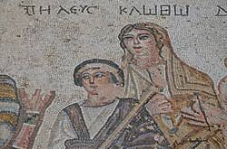

PELEUS

Introduction
In Greek mythology, Peleus was a hero and the son of Aeacus, king of the island of Aegina, and the nymph Endeïs. He was known for his bravery and his role in the story of the Argonauts. Peleus is perhaps most famous for being the father of Achilles, the greatest warrior of the Trojan War. He married the sea nymph Thetis, despite obstacles and interference from gods and goddesses, including Zeus and Hera. Peleus was also involved in various other myths and adventures, but his most enduring legacy is his connection to the legendary hero Achilles.
Literary
Some independent researchers believe that this marriage symbolizes an alliance between a human lineage and an ancient marine lineage — that is, a union between the inhabitants of the land and the inhabitants of the sea (symbolically or culturally).This pattern appears in ancient North African traditions (such as the Libyan stories about the "sons of the sea") and in southern Spain (Tartessos), where kings were said to be descended from sea gods.
Peleus was from the Myrmidons, a legendary people from Thessaly who were said to have originated from ants. It is said that when a plague swept the island of Aegina, its king, Aeacus, appealed to his father, Zeus, who transformed the ants on the island into strong men. These men were described as powerful warriors and were called Myrmidons, after the word "myrmex," which means "ant."
In some older texts, Peleus represented the transition from the age of divine heroes to the age of humans, meaning he belonged to the generation where the connection between humans and gods came to an end.
Some authors in the fields of "alternative history" and "comparative mythology" argue that the Greeks inherited their myths from older civilizations that existed in the Mediterranean before them—such as the Minoans (in Crete), the ancient Libyans, or the coastal peoples of North Africa. These authors believe that stories like that of Peleus and Thetis contain references to pre-Greek rituals and beliefs that were later retold in the Greek language.
Some names in the story of Peleus (such as Thetis and Achilles) are said not to have a clear Greek root, but rather possibly have ancient Mediterranean or Amazigh-Libyan origins.
Some alternative historians (such as René Girard and Robert Temple) have suggested that the tales of Peleus and Achilles reflect remnants of a civilization that existed in the region between Crete, Cyprus, Libya, and the coast of Tunisia—an area that was rich in maritime trade and minerals (such as gold and copper).
Research
Some names of ancient Libyan kings or figures in ancient Mauritanian/Tunisian folklore, such as Balios or Balius (later appearing in Roman mythology as a mythical horse), show a phonetic similarity to Peleus.